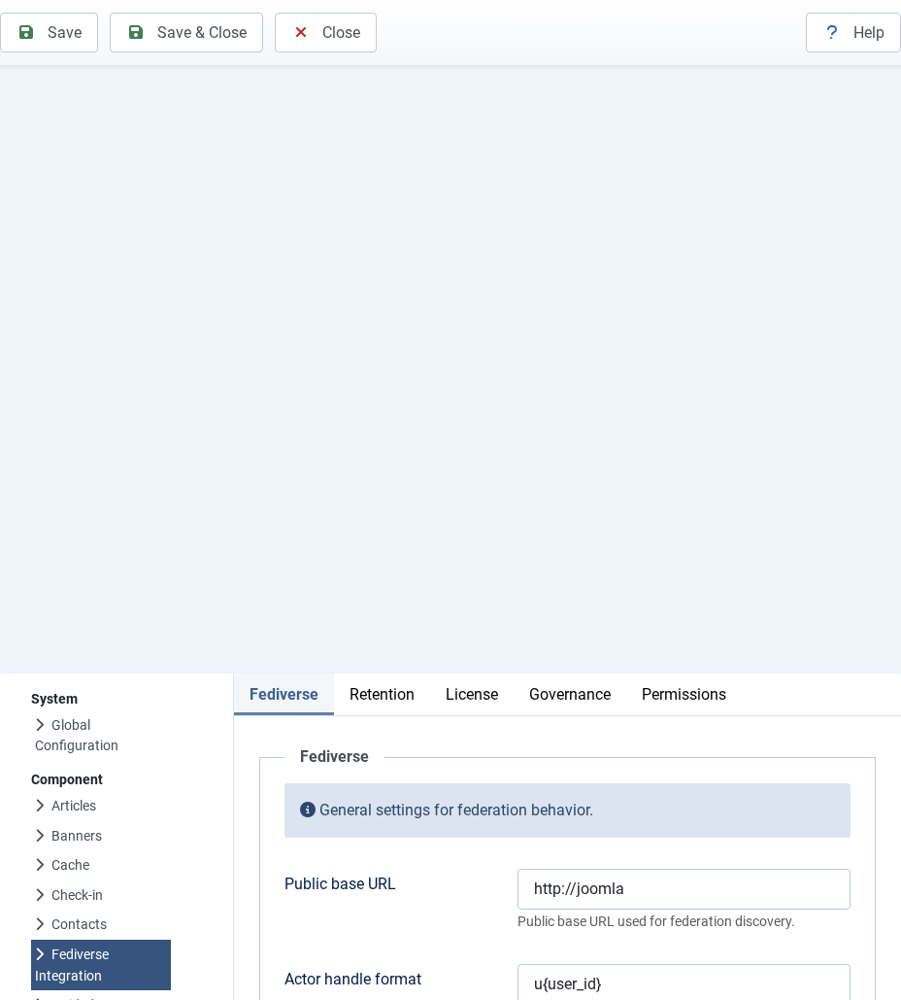
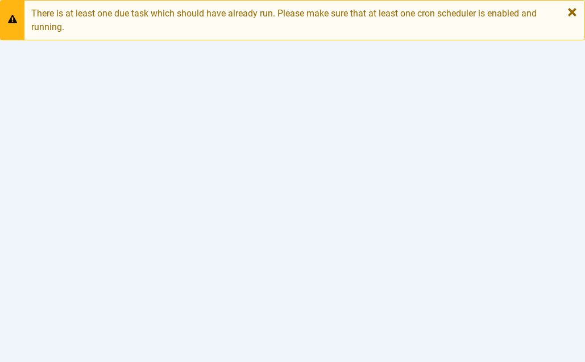
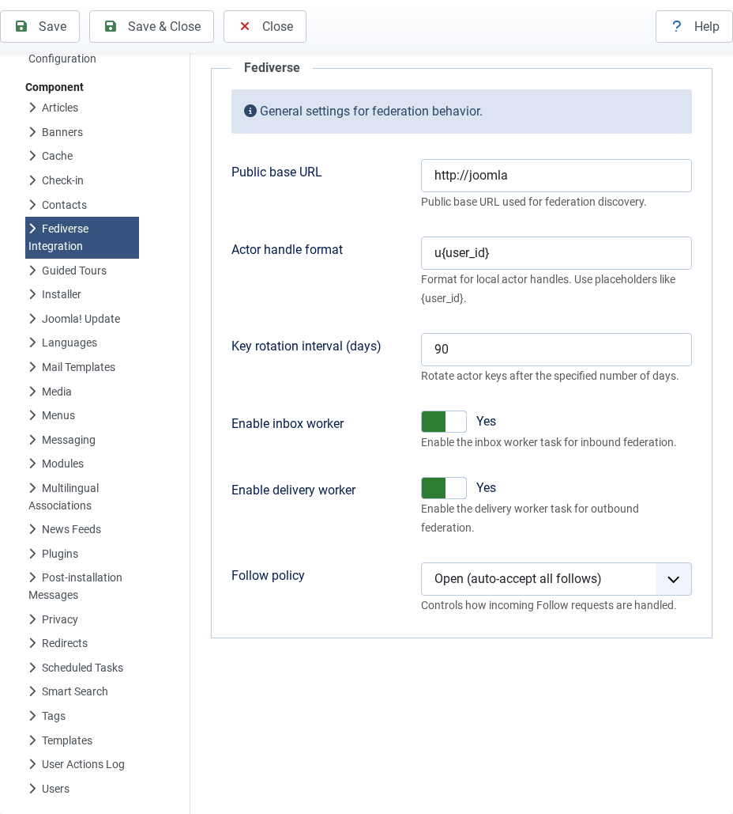

Configuring Joomla Fediverse
| 🏠 Tutorial Home | ← Installing Joomla Fediverse | Creating Actors → |
| Before you can create actors or publish content to the Fediverse, you need to tell Joomla Fediverse a few things about your site: its public identity, how aggressively to allow incoming follows, and which background tasks should run. This tutorial walks through every setting you are likely to touch on a typical installation. |
| ## Prerequisites |
| - Joomla Fediverse installed and both required plugins enabled (see Tutorial 01 — Installation) - Administrator access to the Joomla back-end |
Step 1: Global Settings

The Fediverse configuration form. Reach it via Components → Fediverse → Options.The fields you should review immediately:
| Field | What it does | Recommended value |
|---|---|---|
| Site handle suffix | The domain appended to actor handles —
grace@yoursite.example. Must match your site’s public
domain. |
yoursite.example |
| Base URL | The HTTPS root URL of your Joomla site. ActivityPub uses this to build all actor and object URIs. | https://yoursite.example |
| Maximum incoming follows | Hard cap on the total number of remote followers any single local
actor can accumulate. Set to 0 to disable the cap. |
0 (unlimited) or a sane integer |
| Default follow policy | auto-accept approves all incoming follow requests
immediately; manual queues them for review. |
auto-accept for a public site |
After editing, click Save in the toolbar to apply the changes, or Save & Close to return to the dashboard.
Tip: The Base URL must match the domain your Joomla installation is served on. Mismatches cause WebFinger lookups and HTTP-Signature verification to fail silently.
Step 2: Scheduler Tasks
Joomla Fediverse relies on two scheduled tasks to move activities through the delivery pipeline and clean up stale data. These tasks must exist in Joomla’s Task Scheduler and must be triggered by a cron job (or by Joomla’s lazy-execution mode).

Two Fediverse tasks should appear: the delivery task and the cleanup task.You should see two entries:
- Fediverse — Deliver Outbound Activities — dequeues items from the delivery queue and sends them to remote inboxes via HTTP POST. Should run every one to five minutes.
- Fediverse — Inbox Cleanup — purges processed inbox entries older than a configurable retention window. Can run daily.
If either task is missing, click New and add it from the Fediverse task type. If the tasks exist but show a red status icon, click the task name and ensure Published is set to Yes.
Cron configuration
For reliable delivery, call Joomla’s scheduler endpoint from a server-side cron job:
*/5 * * * * curl -s "https://yoursite.example/index.php?option=com_ajax&plugin=fediverse&format=json" > /dev/null 2>&1Step 3: Verifying the WebFinger Endpoint
WebFinger is the discovery protocol other Fediverse servers use to find your actors. Before creating any actors, confirm the endpoint is reachable.
Open a browser (or use curl) and visit:
/.well-known/webfinger?resource=acct:grace@yoursite.exampleReplace grace with any local actor handle you have
already created, and replace yoursite.example with your
site’s domain.
A healthy response looks like this:
{
"subject": "acct:grace@yoursite.example",
"aliases": ["https://yoursite.example/activitypub/actors/grace"],
"links": [
{
"rel": "self",
"type": "application/activity+json",
"href": "https://yoursite.example/activitypub/actors/grace"
}
]
}
A valid WebFinger response confirms the System plugin is active and routing correctly.If the endpoint returns a 404, the System -
Fediverse plugin is either disabled or its routing rules are
blocked by another plugin. If it returns HTML instead of JSON, the
Accept header is not being respected — check that no
caching layer is stripping request headers.
Common Issues
| Symptom | Likely cause | Solution |
|---|---|---|
| Configuration form shows “Save failed” | File-system permissions on the configuration.php
directory |
Give the web server write access to the Joomla root, or use a custom params table |
| Scheduler tasks never fire | System cron not configured | Add a cron entry as shown above, or enable Web Cron |
| WebFinger returns 404 | System - Fediverse plugin disabled | Enable plg_system_fediverse in System →
Plugins |
| WebFinger returns HTML | Caching plugin serving a cached HTML response | Exclude /.well-known/* from caching rules |
| Remote server can’t resolve actors | Base URL does not match actual domain | Re-check the Base URL field in Options |